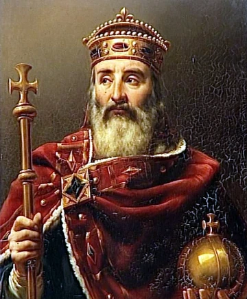
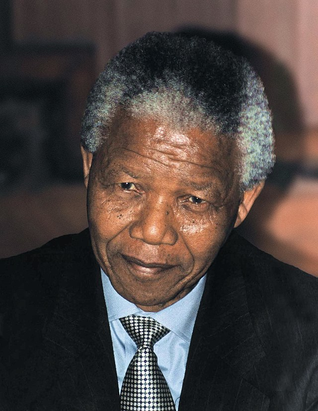
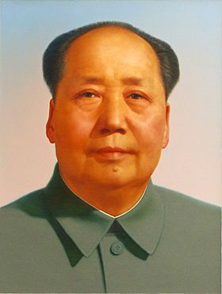

Scope: Global History
Focus: Politics, Strategy, Legacy
Included Figures: Cyrus the Great, Charlemagne, Alexander the Great, Nelson Mandela, Abraham Lincoln, Queen Elizabeth I, Winston Churchill, Mao Zedong
Impact: Shaping modern civilization and ideals of governance
Introduction to Famous Leaders
Famous leaders define eras by their vision, courage and capacity to institutionalize change. From Cyrus the Great’s charter of rights to Churchill’s defiance of tyranny, this in‑depth exploration traces how eight renowned figures created enduring structures—legal, educational, military—and set ethical benchmarks still taught in leadership academies today.
We analyze each famous leader’s upbringing, critical turning points, signature policies and long‑term legacy, offering aspiring leaders detailed case studies in power, reform and moral authority.
Cyrus the Great – One of History’s Earliest Famous Leaders
Cyrus II of Persia (c. 600–530 BCE) rose from tribal chieftain to founder of the Achaemenid Empire. As a famous leader, he combined military prowess with enlightened governance: after peacefully entering Babylon in 539 BCE, he issued the Cyrus Cylinder, often hailed as the world’s first human rights charter, restoring temples and repatriating displaced peoples.
His administrative innovations included dividing the empire into satrapies—each governed by a satrap accountable to the Great King—while standardizing coinage (the daric), weights and measures. The Royal Road, stretching 1,600 miles, enabled couriers to deliver messages in days rather than months. These reforms bound diverse cultures into a cohesive imperial structure and set a template emulated by later famous leaders from Alexander the Great to modern heads of state balancing federal unity with local autonomy.

Charlemagne – A Famous Leader of the Carolingian Renaissance
Charles I “the Great” (742–814) united much of Western Europe under Christian rule and was crowned Emperor in 800 CE. As one of the most famous leaders of medieval times, he launched the Carolingian Renaissance—founding palace schools, standardizing Latin script (Carolingian minuscule) and preserving classical texts through royal scriptoria.
His capitularies regulated military service, judicial procedures and taxation, while missi dominici—royal envoys—traveled annually to inspect counts, ensuring local justice and fiscal accountability. Infrastructure projects, including roads and bridges, facilitated trade across his realm, demonstrating how this famous leader fused cultural revival with sound governance.
Alexander the Great – The Archetype of Famous Leaders in Conquest and Culture
Alexander III of Macedon (356–323 BCE) is the quintessential famous leader in military history. Tutored by Aristotle, he conquered Persia, Egypt and parts of India in just over a decade, employing innovative siegecraft at Tyre and adapting phalanx tactics to varied terrains.
Alexander founded over twenty cities named Alexandria, each serving as cultural and administrative hubs that blended Greek and local traditions. His policy of intermarriage—he wed Roxana of Bactria—and adoption of select Persian customs exemplifies how this famous leader pursued syncretic empire‑building. His logistical mastery—coordinating supply lines across deserts and mountains—remains a case study in military academies worldwide.

Nelson Mandela – A Famous Leader of Reconciliation
Nelson Rolihlahla Mandela (1918–2013) stands among the most famous leaders of the twentieth century for his moral authority and national reconciliation. Imprisoned for 27 years under apartheid, he emerged in 1990 to negotiate a peaceful transition with President F. W. de Klerk, culminating in South Africa’s first multiracial elections in 1994.
Mandela’s Truth and Reconciliation Commission granted conditional amnesty in exchange for testimony, fostering healing rather than retribution. His symbolic gestures—wearing the Springboks jersey in 1995—and policies on education, land reform and HIV/AIDS awareness laid durable institutional foundations. As a celebrated famous leader, his legacy endures in global leadership programs emphasizing empathy and restorative justice.
Abraham Lincoln – A Famous Leader Who Preserved Democracy
Abraham Lincoln (1809–1865) is revered among famous leaders for guiding the United States through its gravest constitutional crisis. His Emancipation Proclamation reframed the Civil War as a fight for human liberty, and his Gettysburg Address enshrined the phrase “government of the people, by the people, for the people.”
Lincoln’s strategic use of executive authority—suspending habeas corpus to secure Union supply lines—and legislative achievements (Homestead Act, Pacific Railway Act) spurred national expansion. His combination of moral vision, rhetorical skill and pragmatic policy places Lincoln among the most studied famous leaders in democratic governance.

Queen Elizabeth I – The Famous Leader of the Elizabethan Golden Age
Elizabeth Tudor (1533–1603) navigated religious turmoil to establish the Elizabethan Religious Settlement, balancing Protestant and Catholic interests. As a famous leader, she sponsored privateers like Francis Drake, bolstered naval innovation to defeat the Spanish Armada in 1588, and fostered a cultural renaissance under playwrights such as Shakespeare.
Her skillful image management—through iconic portraits and court masques—projected regal authority, while patronage of exploration laid groundwork for England’s future empire. Elizabeth’s blend of political acumen, military foresight and cultural patronage cements her status among famous leaders shaping national identity.

Winston Churchill – The Famous Leader of Wartime Resolve
Sir Winston Churchill (1874–1965) epitomizes famous leaders in crisis management. Appointed Prime Minister in 1940, he galvanized Britain with stirring speeches (“we shall fight on the beaches”) and presence among bomb shelters during the Blitz, forging a resolute public spirit.
Churchill championed radar development at Bletchley Park, oversaw amphibious landing craft design and coordinated Allied strategy with Roosevelt and Stalin. His postwar “Iron Curtain” speech in 1946 defined Cold War geopolitics. A Nobel laureate in literature, Churchill’s memoirs—“The Second World War”—remain essential texts in leadership and strategic studies.

Mao Zedong – A Famous Leader of Revolutionary Transformation
Mao Zedong (1893–1976) founded the People’s Republic of China in 1949 after leading the Communist Party through protracted guerrilla warfare. As one of the most famous leaders of modern history, he implemented land reforms that redistributed property to millions, consolidating peasant support.
Mao’s theoretical works—“On Guerrilla Warfare,” “On Protracted War”—codified tactics for asymmetric conflicts and influenced liberation movements worldwide. Yet campaigns like the Great Leap Forward and Cultural Revolution illustrate how ideological zeal without institutional safeguards can result in grave human suffering. His complex legacy offers a cautionary study on how famous leaders balance revolutionary ambition with governance structures.
Conclusion on Famous Leaders
These eight famous leaders demonstrate that enduring influence arises from blending personal charisma with institutional innovation: Cyrus’s human rights charter, Charlemagne’s cultural revival, Alexander’s syncretic cities, Mandela’s reconciliation, Lincoln’s democratic preservation, Elizabeth’s naval revolution, Churchill’s wartime unity and Mao’s revolutionary overhaul. Their detailed narratives offer rich case studies for anyone seeking to understand how famous leaders forge, sustain and adapt power in complex societies.
Frequently Asked Questions about Famous Leaders
Which famous leader first codified human rights?
Cyrus the Great’s decrees on the Cyrus Cylinder represent the earliest recorded charter of human rights, influencing successive famous leaders in governance.
Which famous leader best balanced mercy and authority?
Nelson Mandela’s Truth and Reconciliation Commission exemplifies how a famous leader can combine compassionate mercy with legal authority to forge national unity.